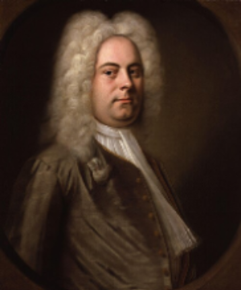
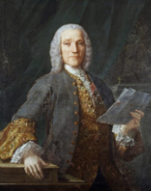
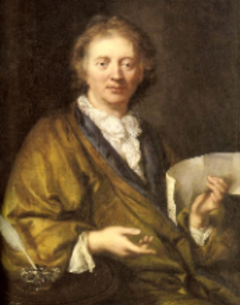
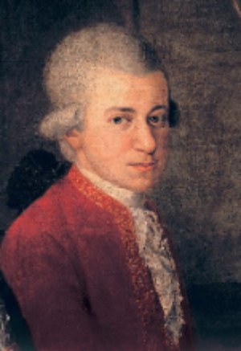
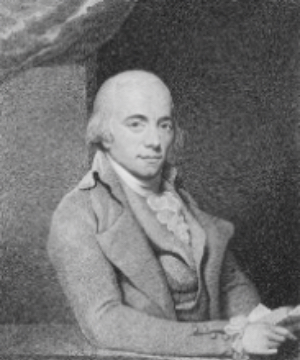

Classical Music Time Periods
Baroque Period (1600-1750)
The Baroque period is the start of the classical music era. This style dominated for over a century, and composers highly emphasized the use of layered melodies (counterpoint technique), as well as the dramatic contrasts of emotions. Although the piano was not invented until the early 1700s, many harpsichord compositions were later adapted to the piano, which established the foundation of the classical piano repertoire.
The Baroque era happened during the absolute rule of European Monarchies and the Scientific Revolution. During this period of time, music primarily serve to entertain nobility courts and religious worship, many composers who did not came from well off families would seek to be employed by churches or nobility, which allow them to fully focus in composing without worring about their livelihood.
Key Composers:
-
Johann Sebastian Bach (1685-1750) - He was a German composer who was largely unkown as a composers during his lifetime, he mastered the counterpoint and harmonic complexity. He was born into a musical family, and held positions in Weimar and Leipzig, at his time there he created multiple works that in modern times represent the pinnacle of the Baroque period. His works like "The Art of Fugue" show his mastery in counterpoint technique, his Well-Tempered Calavier Calavier established an equal temperant tuning, while the Goldberg Variations showcase its beautiful and simple Aria. Click here to see more of Johann Sebastian Bach works.

- George Frideric Handel (1685-1759) - He was a German composer that later on settle in England, he was famous for his oratorios and operas. His famous works include "Harmonious Blacksmith" variations, "Messiah," "Water," and other numerous suites that blend Germand counterpoint and Italian melody. Despire going blind later on, he kept composing through his assistants, he blended different European styles together creating an incredible power and drama that into this age of time still gives chills. Click here to see more of George Fideric Handel works. 
- Domenico Scarlatti (1685-1757) - He was an Italian composer who served the Portuguese and Spanish royalty. Throughout his lifetime, he wrote 500 single-movement sonatas that illustrate technical innovation and Iberian folk influence. His works are like a diary of musical exploration that pushed the harpsichord to its limit with its fiery hand-crossing,rapid repeat notes, and daring harmonies. Pieces like Sonata in D minor K.141 and Sonata in A minor No. 7 showcase his brilliant composition that foreshadowed the Classical era techniques. Click here to see more of Domenico Scarlatti works. 
- François Couperin (1668-1733) - French composers that was known as "Couperin le Grand," he represented the height of French Baroque with his elegant and beautiful harpsichord works. Such as pieces like "Les Barricades Mystérieuses" or "Pièces de claveci," which showscase the musical taste, the character of a specific person, or scenes from daily life in the French court under Louis XIV reign. His work later on would inspired composers like Debussy and Ravel. Click here to see more of François Couperin works. 
Classical Period (1750-1820)
The Classical period emerged as a away to react against the Baroque complexity, balance,and elegant form. On this period the piano began replacing the harpsichord as the primary keyboard instrument, with composers developing sonata forms and establishing symphony, concerto, and string quartet.
This period aligned with the American and French Revolutions, as well the rise of the middle class. Public concerts become more frequent and composers began working independently rather than just serving nobility.Key Composers:
- Wolfgang Amadeus Mozart (1756-1791) - He was an Austrian child prodigy who composed over 600 works across all genres in his lifetime. His created his first composition at the age of 5, Adante in C, and performed infront of the European royalty as a child. His piano concertos represent some of the finest blends of virtuosity and musical expression. Despite dying at 35, his works like Piano Sonata NO. 11, Symphony No. 40, and Minuet in F major No. 11 remain as one of the most prominent classical repertoire in modern time.. Click here to see more of Wolfgang Amadeus Mozart works. 
-
Joseph Haydn (1732-1809) - Austrian composer that was known as the "Father of the Symphony" and "Father of the String Quartet." He spent much of his career working for the Esterházy family, where he develop the Classical style. His later piano sonatas works, like No. 62 in E-Flat Major, show mastery of the form. Click here to see more works of Joseph Haydn works.

- Muzio Clementi (1752-1832), was an Italian and British composer and was most known as the "Father of the Piano," due to his advancement in piano techniques. Some of his most known for his Gradus ad Parnassum, which is a set of 100 diverse piano pieces. Click here to see more works of Muzio Clementi works. 
Romantic Period (1820-1900)
This period is one of the most known in present time, due to been the start when composers started to break ways from the norm. On this period, most work have an intense emotional expression like pain, beauty, despair or love. Is also known for its wonderful virtuosity, and the creation of various branches of classical music like rhapsody or nocturne. This is one of the most use period in any instrumental repertoire as it allows musicians to express themselves and evoke emotion towards the audience through different techniques or methods.
Key Composers:
-
Ludwig van Beethoven (1770-1827), he was a German composer that eventually when deaf, but he was one of the biggest that bridged between the classical and romantic era. Some of his composition that showcase is the Moonlight Sonata op.27, Piano trio in E-Flat major, and Piano Concerto No. 1. Click here to see more of Ludwig Van Beethoven.

-
Frédéric Chopin (1810-1849), he was a Polish composer and virtuoso pianist. He completely revolutionizes piano playing and composition overall; his pieces are known for its demanding expressiveness and technicality. Some of his well-known pieces are Nocturne in E-Flat major, Polonaise in A-Flat major, and Fantaisie-Impromptu. Click here to see more of Frédéric Chopin works.

-
Franz Liszt (1811-1886), was a Hungarian composer, virtuoso pianist, and teacher. He also revolutionize piano technique, which you can see it works like La Campanella, Hungarian Rhapsodies, and transcendental études. Click here to see more of Franz Liszt works.

The Modern Period (1900-Present)
Modern period is when composers completely broke the rules of classical music and started experiment with other genres. The piano continues to adapt to new styles and technologies, one of the creations if the MIDI keyboard. Most modern songs parts are composed with piano and later on adapt to synth, string or other instruments.
Key Composers:
-
Claude Debussy (1862-1918), was a French composer most known for the suite bergamasque and especially the Clair de Lune section which was inspired by a poem. Some of his other works are La mer, Children's Corner, and Petite Suite. Click here to see more of Claude Debussy works.

-
Sergei Rachmaninoff (1873-1943), was a Russian composer that was heavily inspired by the romantic period but used more revolutionized techniques for his concertos. For example, Piano Concerto No. 2, Prelude in C-sharp minor and The Bells. Click here to see more of Sergei Rachmaninoff works.

-
Arnold Schoenberg (1874-1951), was an Austrian composer who developed the twelve-tone technique, and abandon traditional harmony. His piano works like Six Little Piano Pieces and Suite for Piano completely breaks away from tonal music. Click here to see more of Arnold Schoenberg works.

The Modern period also encompass pop, rock, R&B, and other genres, while it deviates from classical traditions, we often see techniques derived from centuries of musical development.